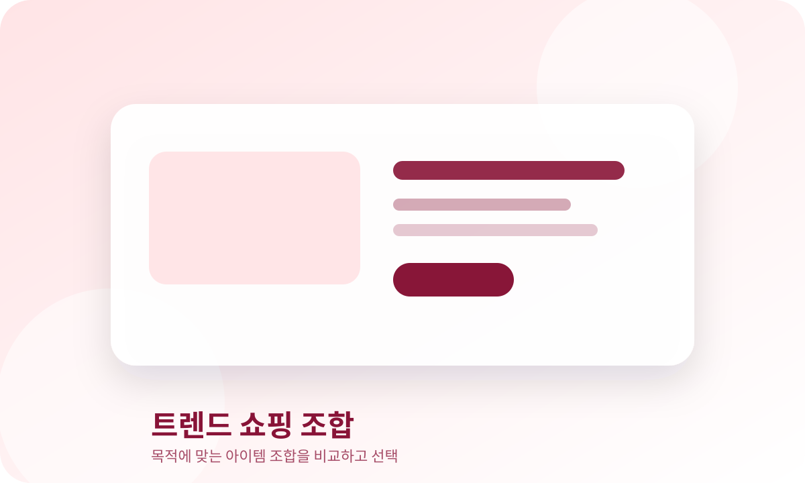

AI 쇼츠 제작 루틴
트렌드 키워드에서 대본·편집·사이트 연결까지 콘텐츠 자산으로 묶는 주제입니다.
콘텐츠화상품연결
트렌드플로우는 AI 활용, 집중력 회복, 디지털 웰빙, 미니멀 공간, 트렌드 쇼핑을 중심으로 일상에 바로 적용할 수 있는 가이드와 아이템 조합을 정리합니다.
단순 인기 키워드보다 실제 생활 문제, 콘텐츠 아이디어, 구매 전 판단 기준으로 연결되는 주제를 우선합니다.
콘텐츠화와 제품 조합으로 연결하기 좋은 주제를 우선 노출합니다.
트렌드 키워드에서 대본·편집·사이트 연결까지 콘텐츠 자산으로 묶는 주제입니다.
정보 과부하와 집중력 회복 관심 흐름에 맞춘 실용 루틴입니다.
작은 공간에서 일과 휴식을 분리하는 실용적인 셋업 주제입니다.
쇼츠·릴스·AI 영상 제작 입문자에게 연결하기 좋은 아이템 주제입니다.
AI 작업, 집중력, 공간 정리, 트렌드 쇼핑이 균형 있게 보이도록 배치했습니다.
 AI 작업
AI 작업AI를 활용해 쇼츠 제작 흐름을 단순화하는 방법을 정리합니다.
읽기 → 디지털 디톡스
디지털 디톡스퇴근 후 스마트폰 사용을 줄이고 집중 시간을 회복하는 환경 조합입니다.
읽기 → 책상 셋업
책상 셋업작은 책상과 방을 집중 환경으로 바꾸는 미니멀 셋업을 정리합니다.
읽기 →
AI 영상쇼츠, 릴스, AI 영상 제작을 시작할 때 필요한 기본 장비 조합입니다.
읽기 → 원룸 공간
원룸 공간작은 방에서 작업 영역과 휴식 영역을 나누는 미니멀 홈오피스 조합입니다.
읽기 →작은 방에서 공기, 수납, 조명, 습도 관리를 개선하는 생활 아이템 조합입니다.
읽기 →상품을 먼저 보여주기보다, 방문자가 겪는 문제 상황을 기준으로 필요한 조합을 정리합니다.
피곤한 상태에서도 바로 시작할 수 있는 최소 작업 환경을 먼저 만듭니다.
알림을 참는 방식보다 스마트폰을 시야에서 분리하는 구조가 먼저입니다.
물건을 더 올리기보다, 보이는 자극과 케이블을 줄이는 것이 핵심입니다.
광고처럼 보이지 않도록, 구매보다 판단 기준과 실용 흐름을 먼저 제공합니다.
단순 유행어보다 실제 불편함을 줄이는 주제를 우선합니다.
쇼츠, 블로그, 체크리스트로 확장 가능한 주제를 선별합니다.
구매를 유도하기 전에 비교 기준과 체크리스트를 제공합니다.
단일 상품보다 상황별로 함께 쓰이는 흐름을 정리합니다.
검색과 쇼츠, 블로그, 쇼핑 조합으로 확장하기 좋은 주제를 모았습니다.
트렌드플로우는 생활을 더 단순하고 효율적으로 만들기 위한 정보를 정리합니다. 관심 있는 주제부터 읽고, 내 상황에 맞는 조합을 확인해보세요.
쇼츠 유입, 사이트 체류, 내부링크, 상품 조합으로 이어지는 글을 추가했습니다.
쇼츠는 관심 유입, 사이트는 상세 설명과 판단 기준, 카테고리는 추가 탐색 역할을 합니다.
Before / After, 실패 패턴, 체크리스트를 30초 영상으로 만듭니다.
AI 콘텐츠 루프 보기 →영상에서 다 못한 선택 기준과 구매 전 질문을 글로 정리합니다.
체크리스트 보기 →비슷한 주제의 글을 계속 읽도록 내부링크를 연결합니다.
트렌드 쇼핑 보기 →광고처럼 보이지 않게 운영하기 위한 기준을 정리했습니다.
방문자가 실제로 해결하려는 상황을 먼저 이해해야 구매 전 판단이 쉬워지기 때문입니다.
쇼츠는 유입을 만들고, 사이트 글은 상세 기준과 관련 글 탐색을 담당합니다.
글 20~30개와 제품군이 확정된 뒤, 직접 촬영 사진이나 통일된 WebP 이미지를 넣는 것이 좋습니다.